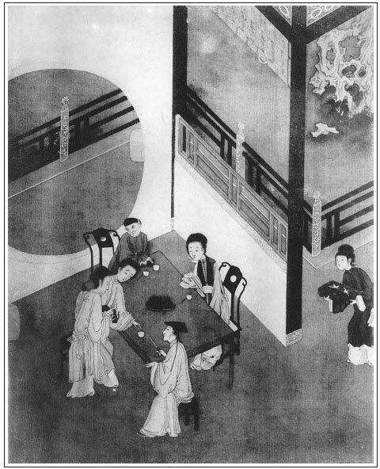

張回韓道國，一百回內結果之人也。其結果乃在何官人家。夫韓道國妻王六兒，於「財」「色」二字不堪而沉溺者也；愛姐於「財」「色」二字不堪而回頭者也。不堪所以有此書，不堪而欲其回頭，又所以有此書。故結以何官人，為凡世之不抱何姓人等作官人者勸也。故仍以何官人結，而此處於未出韓道國，先出何官人，因買何官人貨，方尋韓夥計。然則「財」「色」二字，人自不能忘情，相引而迷於其中耳。故何官人之貨，必雲絨線。
寫失鑰罰唱，必用還席作因，尋衣作引。一伏後文打狗罵潘姥姥之因，一伏「弄一得雙」由尋衣服之引。
一咱寫金蓮強敬濟吃酒索唱，總是從骨髓中描出，深成一片，不能為之字分句解，知者當心領其用筆之妙。然而他偏又夾寫瓶兒、春梅、潘姥姥、吳月娘、如意兒、官哥，總是史筆之簡淨靈活處。
金蓮、敬濟至一見消魂後，至此已幾番描寫。然而一層深一層，一次熟落膽大一次，總是罪西門、月娘不知防嫌。而此回又必寫月娘見其同席，而不早正色以閒之也。
內心寫月娘小產者，乃作者深惡婦人私行妄動，毫無家教。以致釀成禍患而不知悔，猶信任三姑六婆，安胎打胎，胡亂行事，全無閨範者也。又深譏西門空自奸許，其實不能出婦人之手，終被瞞過。何也？如月娘有孕七月，而一旦落去，西門且不知，然則設十月生下，問之西門，當亦不知為何人之子乎？不知其孕，固屬愚甚，知其有孕而並不問其何以不生出，天下人處家之昏昏者。
孰有如此？亦如翡翠軒，去生官哥止一兩月，然則私語時，瓶兒之娠已七八月矣，西門亦未之知．其醉夢為何如？宜乎劉婆子與三姑得出入，以肆其奸也。有家者甚勿為色所迷。
王六兒與二搗鬼姦情，乃雲道國縱之。細觀方知作者之陽秋。蓋王六兒打扮作倚門妝，引惹遊蜂，一也；叔嫂不同席，古禮也，道國有弟而不知閒，二也；自己浮誇，不守本分，以致妻與弟得以容其奸，三也；敗露後，不能出之於王屠家，且百計全之，四也。此所以作者不罪王六兒與二搗鬼，而大書韓道國縱婦爭風，誰為稗官家無陽秋哉？
又月娘小產，必於王六兒將出之時，煞有深意。見六為陰數，先有潘六兒在前，後有王六兒在後，重陰凝結，生意盡矣。幸有一陽隱伏，猶可圖來復之機，乃一旦動搖剝盡，不必至喪命一回，而久已知兩六之為禍根，後死兩六兒家猶證果，非結因也。
王、劉、薛三姑子，三姑也；劉婆子，劉與六通，六婆也。寫來遂令人混混，急切看不出，是其狡猾之才。偶記於此。
詞曰：
衣染鶯黃，愛停板駐拍，勸酒持觴。低鬟蟬影動，私語口脂香。簷滴露、竹風涼，拚劇飲琳琅。夜漸深籠燈就月，仔細端相。
──右調《意難忘前》

話說西門慶衙門中來家，進門就問月娘：「哥兒好些？使小廝請太醫去。」月娘道：「我已叫劉婆子來了。吃了他藥，孩子如今不洋奶，穩穩睡了這半日，覺好些了。」西門慶道：「信那老淫婦胡針亂灸，還請小兒科太醫看才好。張旁早為打胎、炙官哥一引。既好些了，罷。若不好，拿到衙門裡去拶與老淫婦一拶子。」張夾驕極矣。月娘道：「你恁的枉口拔舌罵人。你家孩兒現吃了他藥好了，還恁舒著嘴子罵人！」說畢，丫鬟擺上飯來。西門慶剛才吃了飯，只見玳安兒來報：「應二爹來了。」西門慶教小廝：「拿茶出去，請應二爹卷棚內坐。」向月娘道：「把剛才我吃飯的菜蔬休動，教小廝拿飯出去，教姐夫陪他吃，說我就來。」月娘便問：「你昨日早晨使他往那裡去？那咱才來。」
西門慶便告說：「應二哥認的一個湖州客人何官兒，門外店裡堆著五百兩絲線，急等著要起身家去，來對我說要折些發脫。我只許他四百五十兩銀子。昨日使他同來保拿了兩錠大銀子作樣銀，已是成了來了，約下今日兌銀子去。我想來，獅子街房子空閒，打開門面兩間，倒好收拾開個絨線鋪子，搭個夥計。況來保已是鄆王府認納官錢，教他與夥計在那裡，又看了房兒，又做了買賣。」月娘道：「少不得又尋夥計。」西門慶道：「應二哥說他有一相識，姓韓，原是絨線行，如今沒本錢，閒在家裡，說寫算皆精，行止端正，再三保舉。改日領他來見我，寫立合同。」張旁未出愛姐，先出道國、六兒。未出六兒，先出何官人。何官人乃愛姐結果之所，今於未有愛姐之先，先出何官人，且因何官人貨物，才尋來韓道國，是何等神至筆力！即以來保與之同夥，後文情事俱到，真是天際神龍，令人不可測擬。且敬濟罰唱，乃未得金蓮之時，已安愛姐守節之處。謂一百回非一時做出，吾不信也。說畢，西門慶在房中兌了四百五十兩銀子，教來保拿出來。陳敬濟已陪應伯爵在卷棚內吃完飯，等的心裡火發。見銀子出來，心中歡喜，與西門慶唱了喏，說道：「昨日打攪哥，到家晚了，今日再扒不起來。」西門慶道：「這銀子我兌了四百五十兩，教來保取搭連眼同裝了。今日好日子，便僱車輛搬了貨來，鎖在那邊房子裡就是了。」伯爵道：「哥主張的有理。只怕蠻子停留長智，推進貨來就完了帳。」於是同來保騎頭口，打著銀子，逕到門外店中成交易去。誰知伯爵背地裡與何官兒砸殺了，只四百二十兩銀子，打了三十兩背工。對著來保，當面只拿出九兩用銀來，二人均分了。雇了車腳，即日推貨進城，堆在獅子街空房內，鎖了門，來回西門慶話。
西門慶教應伯爵，擇吉日領韓夥計來見。其人五短身材，三十年紀，言談滾滾，滿面春風。西門慶即日與他寫立合同。同來保領本錢僱人染絲，在獅子街開張鋪面，發賣各色絨絲。一日也賣數十兩銀子，不在話下。
光陰迅速，日月如梭，不覺八月十五日，月娘生辰來到，請堂客擺酒。留下吳大妗子、潘姥姥、楊姑娘並兩個姑子住兩日，晚夕宣唱佛曲兒，常坐到二三更才歇。那日，西門慶因上房有吳大妗子在這裡，不方便，走到前邊李瓶兒房中看官哥兒，心裡要在李瓶兒房裡睡。李瓶兒道：「孩子才好些兒，我心裡不耐煩，往他五媽媽房裡睡一夜罷。」繡眉善哉，善哉。西門慶笑道：「我不惹你。」於是走過金蓮這邊來。那金蓮聽見漢子進他房來，如同拾了金寶一般，連忙打發他潘姥姥過李瓶兒這邊宿歇。他便房中高點銀燈，款伸錦被，薰香澡牝，夜間陪西門慶同寢。枕畔之情，百般難述，無非只要牢寵漢子心，使他不往別人房裡去。正是：
鼓鬣遊蜂，嫩蕊半勻春蕩漾；
餐香粉蝶，花房深宿夜風流。
李瓶兒見潘姥姥過來，連忙讓在炕上坐的。教迎春安排酒菜果餅，晚夕說話，坐半夜才睡。到次日，與了潘姥姥一件蔥白綾襖兒，兩雙緞子鞋面，二百文錢。把婆子歡喜的眉歡眼笑，過這邊來，拿與金蓮瞧，說：「這是那邊姐姐與我的。」金蓮見了，反說他娘：「好恁小眼薄皮的，什麼好的，拿了他的來！」潘姥姥道：「好姐姐，人倒可憐見與我，你卻說這個話。你肯與我一件兒穿？」張旁酸鼻語，不可令天下人子聞之，更不可令天下父母聞之。金蓮道：「我比不得他有錢的姐姐。我穿的還沒有哩，拿什麼與你！你平白吃了人家的來，等住回可整理幾碟子來，篩上壺酒，拿過去還了他就是了。到明日少不的教人玷言玷語，我是聽不上。」繡眉以己意度人，是因有君子小人之別。張夾小人心事。一面吩咐春梅，定八碟菜蔬，四盒果子，一錫瓶酒。打聽西門慶不在家，教秋菊用方盒拿到李瓶兒房裡，說：「娘和姥姥過來，無事和六娘吃杯酒。」李瓶兒道：「又教你娘費心。」少頃，金蓮和潘姥姥來，三人坐定，把酒來斟。春梅侍立斟酒。
娘兒每說話間，只見秋菊來叫春梅，說：「姐夫在那邊尋衣裳，張夾又是衣服作祟。教你去開外邊樓門哩。」張旁樓裡間則金蓮臥房矣。此蓋與金蓮對面一間，而令敬濟朝夕出入，難矣哉！金蓮吩咐：「叫你姐夫尋了衣裳來這裡喝甌子酒去。」不一時，敬濟尋了幾家衣服，就往外走。春梅進來回說：「他不來。」金蓮道：「好歹拉了他來。」又使出繡春去把敬濟請來。潘姥姥在炕上坐，小桌兒擺著果盒兒，金蓮、李瓶兒陪著吃酒。連忙唱了喏。金蓮說：「我好意教你來吃酒兒，你怎的張致不來？就吊了造化了？」呶了個嘴兒，教春梅：「拿寬杯兒來，篩與你姐夫吃。」敬濟把尋的衣服放在炕上，坐下。春梅做定科范，取了個茶甌子，流沿邊斟上，遞與他。慌的敬濟說道：「五娘賜我，寧可吃兩小鍾兒罷。外邊鋪子裡許多人等著要衣裳。」金蓮道：「教他等著去，我偏教你吃這一大鐘，那小鍾子刁刁的不耐煩。」潘姥姥道：「只教哥哥吃這一鍾罷，只怕他買賣事忙。」金蓮道：「你信他！有什麼忙！吃好少酒兒，金漆桶子吃到第二道箍上。」那敬濟笑著拿酒來，剛呷了兩口。潘姥姥叫春梅：「姐姐，你拿箸兒與哥哥。教他吃寡酒？」春梅也不拿箸，故意毆他，向攢盒內取了兩個核桃遞與他。繡眉春梅、金蓮此唱彼和，的真肝膽相知。那敬濟接過來道：「你敢笑話我就禁不開他？」於是放在牙上只一磕，咬碎了下酒。潘姥姥道：「還是小後生家，好口牙。相老身，東西兒硬些就吃不得。」敬濟道：「兒子世上有兩樁兒──鵝卵石、牛犄角──吃不得罷了。」金蓮見他吃了那鍾酒，教春梅再斟上一鍾兒，說：「頭一鍾是我的了。你姥姥和六娘不是人麼？也不教你吃多，只吃三甌子，饒了你罷。」敬濟道：「五娘可憐見兒子來，真吃不得了。此這一鐘，恐怕臉紅，惹爹見怪。」金蓮道：「你也怕你爹？我說你不怕他。繡眉只一語，隱出戲狎心腸。張旁淫婦活跳出來。你爹今日往那裡吃酒去了？」敬濟道：「後晌往吳驛丞家吃酒，如今在對門喬大戶房子裡看收拾哩。」金蓮問：「喬大戶家昨日搬了去，咱今日怎不與他送茶？」敬濟道：「今早送茶去了。」李瓶兒問：「他家搬到那裡住去了？」敬濟道：「他在東大街上使了一千二百銀子，買了所好不大的房子，與咱家房子差不多兒，門面七間，到底五層。」張夾已為攀親之地。說話之間，敬濟捏著鼻子又挨了一鐘，趁金蓮眼錯，得手拿著衣服往外一溜煙跑了。迎春道：「娘你看，姐夫忘記鑰匙去了。」那金蓮取過來坐在身底下，向李瓶兒道：「等他來尋，你每且不要說，等我奈何他一回兒才與他。」潘姥姥道：「姐姐與他罷了，又奈何他怎的。」
那敬濟走到鋪子裡，袖內摸摸，不見鑰匙，一直走到李瓶兒房裡尋。金蓮道：「誰見你什麼鑰匙，你管著什麼來？放在那裡，就不知道？」春梅道：「只怕你鎖在樓上了。」張旁春梅不講，可知得雙，非相逼也。敬濟道：「我記的帶出來。」金蓮道：「小孩兒家屁股大，敢吊了心！又不知家裡外頭什麼人扯落的你恁有魂沒識，心不在肝上。」繡眉隱然自居，妙。敬濟道：「有人來贖衣裳，可怎的樣？趁爹不過來，免不得叫個小爐匠來開樓門，才知有沒。」那李瓶兒忍不住，只顧笑。敬濟道：「六娘拾了，與了我罷。」金蓮道：「也沒見這李大姐，不知和他笑什麼，恰似我每拿了他的一般。」急得敬濟只是牛回磨轉，轉眼看見金蓮身底下露出鑰匙帶兒來，說道：「這不是鑰匙！」才待用手去取，被金蓮褪在袖內，不與他，說道：「你的鑰匙兒，怎落在我手裡？」急得那小伙兒只是殺雞扯膝。金蓮道：「只說你會唱的好曲兒，倒在外邊鋪子裡唱與小廝聽，怎的不唱個兒我聽？今日趁著你姥姥和六娘在這裡，只揀眼生好的唱個兒，我就與你這鑰匙。不然，隨你就跳上白塔，我也沒有。」敬濟道：「這五娘，就勒掯出人痞來。誰對你老人家說我會唱？」金蓮道：「你還搗鬼？『南京沈萬三，文旁沈萬三，乃明太祖時有名之豪富，豈宋時亦有乎？可見此書非實書。北京枯樹彎張旁非宋事可見，寓言。──人的名兒，樹的影兒』。」那小伙兒吃他奈何不過，說道：「死不了人，等我唱。我肚子裡撐心柱肝，要一百個也有！」金蓮罵道：「說嘴的短命！」自把各人面前酒斟上。金蓮道：「你再吃一杯，蓋著臉兒好唱。」敬濟道：「我唱了慢慢吃。我唱個果子名《山坡羊》你聽：
初相交，在桃園兒裡結義。相交下來，把你當玉黃李子兒抬舉。人人說你在青翠花家飲酒，氣的我把頻波臉兒撾的粉粉的碎。我把你賊，你學了虎刺賓了，外實裡虛，氣的我李子眼兒珠淚垂。我使的一對桃奴兒尋你，見你在軟棗兒樹下就和我別離了去。氣的我鶴頂紅剪一柳青絲兒來呵，你海東紅反說我理虧。罵了句生心紅的強賊，逼的我急了，我在吊枝幹兒上尋個無常，到三秋，我看你倚靠著誰？」
唱畢，就問金蓮要鑰匙，說道：「五娘快與了我罷！夥計鋪子裡不知怎的等著我哩。只怕一時爹過來。」金蓮道：「你倒自在性兒，說的且是輕巧。等你爹問，我就說你不知在那裡吃了酒，把鑰匙不見了，走來俺屋裡尋。」敬濟道：「爺樂！五娘就是弄人的劊子手。」繡眉人固會弄。李瓶兒和潘姥姥再三旁邊說道：「姐姐與他去罷。」金蓮道：「若不是姥姥和你六娘勸我，定罰教你唱到天晚。張旁出金蓮不堪。頭裡騙嘴說一百個，才唱一個曲兒就要騰翅子？我手裡放你不過。」張夾浪極矣，何物化工之筆，一一描出。敬濟道：「我還有一個兒看家的，是銀名《山坡羊》，亦發孝順你老人家罷。」於是頓開喉音唱道：
冤家你不來，白悶我一月，閃的人反拍著外膛兒細絲諒不徹。我使獅子頭定兒小廝拿著黃票兒請你，你在兵部窪兒裡元寶兒家歡娛過夜。我陪銅磬兒傢俬為焦心一旦兒棄捨，我把如同印箝兒印在心裡愁無求解。叫著。你把那挺臉兒高揚著不理，空教我撥著雙火筒兒頓著罐子等到你更深半夜氣的奴花銀竹葉臉兒咬定銀牙來呵，喚官銀頂上了我房門，隨那潑臉兒冤家輕敲兒不理。罵了句煎徹了的三傾兒搗槽斜賊，空把奴一腔子暖汁兒真心倒與你，只當做熱血。
敬濟唱畢，金蓮才待叫春梅斟酒與他，忽有月娘從後邊來，張旁完得妙。見奶子如意兒抱著官哥兒在房門首石基上坐，便說道：「孩子才好些，你這狗肉又抱他在風裡，還不抱進去！」金蓮問：「是誰說話？」繡春回道：「大娘來了。」敬濟慌的拿鑰匙往外走不迭。眾人都下來迎接月娘。月娘便問：「陳姐夫在這裡做什麼來？」金蓮道：「李大姐整治些菜，請俺娘坐坐。繡眉開口推及瓶兒，以敬濟之故。張夾狐精常態如畫。陳姐夫尋衣服，叫他進來吃一杯。姐姐，你請坐，好甜酒兒，你吃一杯。」月娘道：「我不吃。後邊他大妗子和楊姑娘要家去，我又記掛著這孩子，逕來看看。李大姐，你也不管，又教奶子抱他在風裡坐的。前日劉婆子說他是驚寒，人還不好生看他！」李瓶兒道：「俺陪著姥姥吃酒，誰知賊臭肉三不知抱他出去了。」月娘坐了半歇，回後邊去了。一回，使小玉來，請姥姥和五娘、六娘後邊坐。那潘金蓮和李瓶兒勻了臉，同潘姥姥往後邊來，陪大妗子、楊姑娘吃酒。到日落時分，與月娘送出大門，上轎去了。都在門裡站立，先是孟玉樓說道：張旁此處卻是玉樓作引，或者天道報應不爽也。「大姐姐，今日他爹不在，往吳驛丞家吃酒去了，咱到好往對門喬大戶家房裡瞧瞧。」月娘問看門的平安兒：「誰拿著那邊鑰匙哩？」平安道：「娘每要過去瞧，開著門哩。來興哥看著兩個坌工的在那裡做活。」月娘吩咐：「你教他躲開，等俺每瞧瞧去。」平安兒道：「娘每隻顧瞧，不妨事。他每都在第四層大空房撥灰篩土，叫出來就是了。」
當下月娘、李嬌兒、孟玉樓、潘金蓮、李瓶兒，都用轎子短搬抬過房子內。進了儀門，就是三間廳。第二層是樓。月娘要上樓去，可是作怪，剛上到樓梯中間，不料梯磴陡趄，只聞月娘哎了一聲，滑下一隻腳來，早是月娘攀住樓梯兩邊欄杆。慌了玉樓，便道：「姐姐怎的？」連忙搊住他一隻胳膊，不曾跌下來。月娘吃了一驚，就不上去。眾人扶了下來，諕的臉蠟查兒黃了。玉樓便問：「姐姐，怎麼上來滑了腳，不曾扭著那裡？」月娘道：「跌倒不曾跌著，只是扭了腰子，諕的我心跳在口裡。樓梯子趄，我只當咱家裡樓上來，滑了腳。早是攀住欄杆，不然怎了！」李嬌兒道：「你又身上不方便，早知不上樓也罷了。」於是眾姊妹相伴月娘回家。剛到家，叫的應就肚中疼痛。月娘忍不過，趁西門慶不在家，使小廝叫了劉婆子來看。婆子道：「你已是去經事來著傷，多是成不的了。」月娘道：「便了五個多月了，上樓著了扭。」婆子道：「你吃了我這藥，安不住，下來罷了。」繡眉劉婆可恨。不得安胎而得摧生者，醫家妙訣。月娘道：「下來罷！」張夾月娘信六婆之報。婆子於是留了兩服大黑丸子藥，教月娘用艾酒吃。那消半夜，吊下來了，在馬桶裡。點燈撥看，原來是個男胎，已成形了。正是：
胚胎未能成性命，真靈先到杳冥天。
幸得那日西門慶在玉樓房中歇了。
到次日，玉樓早晨到上房，問月娘：「身子如何？」月娘告訴：「半夜果然疼不住，落下來了，倒是小廝兒。」玉樓道：「可惜了！他爹不知道？」月娘道：「他爹吃酒來家，到我屋裡才待脫衣裳，我說你往他們屋裡去罷，我心裡不自在。他才往你這邊來了。我沒對他說。我如今肚裡還有些隱隱的疼。」玉樓道：「只怕還有些餘血未盡，篩酒吃些鍋臍灰兒就好了。」又道：「姐姐，你還計較兩日兒，且在屋裡不可出去。小產比大產還難調理，只怕掉了風寒，難為你的身子。」月娘道：「你沒的說，倒沒的唱揚的一地裡知道，平白噪剌剌的抱什麼空窩，惹的人動那唇齒。」繡眉用語隱然有指。以此就沒教西門慶知道。此事表過不題。
且說西門慶新搭的開絨線鋪夥計，也不是守本分的人，姓韓名道國，字希堯，乃是破落戶韓光頭的兒子。如今跌落下來，替了大爺的差使，亦在鄆王府做校尉，張夾與來保結親之脈。見在縣東街牛皮小巷居住。其人性本虛飄，言過其實，巧於詞色，善於言談。許人錢，如捉影捕風；騙人財，如探囊取物。自從西門慶家做了買賣，手裡財帛從容，新做了幾件虼蚤皮，在街上掇著肩膊兒就搖擺起來。張夾何止道國一人。人見了不叫他個韓希堯，只叫他做「韓一搖」。他渾家乃是宰牲口王屠妹子，排行六兒，張眉六者，陰數也。潘六兒與王六兒八成重陰之數，陽已全盡，安得不死？坤盡為復，復之一陽，必須靜以保之方可。今月娘過街上樓，以致一陽盡，所以必死無疑。生的長跳身材，瓜子面皮，紫膛色，約二十八九年紀。身邊有個女孩兒，張夾又出愛姐。嫡親三口兒度日。他兄弟韓二，名二搗鬼，是個耍錢的搗子，在外邊另住。舊與這婦人有奸，趕韓道國不在家，鋪中上宿，他便時常走來與婦人吃酒，到晚夕刮涎就不去了。不想街坊有幾個浮浪子弟，見婦人搽脂抹粉，打扮的喬模喬樣，常在門首站立睃人，人略鬥他斗兒，又臭又硬，就張致罵人。因此街坊這些小伙子兒，心中有幾分不憤，暗暗三兩成群，背地講論，看他背地與什麼人有首尾。那消半個月，打聽出與他小叔韓二這件事來。
原來韓道國這間屋門面三間，房裡兩邊都是鄰舍，後門逆水塘。這夥人，單看韓二進去，或夜晚扒在牆上看覷，或白日裡暗使小猴子在後塘推道捉蛾兒，單等捉姦。不想那日二搗鬼打聽他哥不在，大白日裝酒和婦人吃，醉了，倒插了門，在房裡幹事。不防眾人睃見蹤跡，小猴子扒過來，把後門開了，眾人一齊進去，掇開房門。
韓二奪門就走，被一少年一拳打倒拿住。老婆還在炕上，慌穿衣不迭。一人進去，先把褲子撾在手裡，都一條繩子拴出來。繡眉此輩捉姦，手腳敏捷可喜。須臾，圍了一門首人，跟到牛皮街廂鋪裡，就哄動了那一條街巷。這一個來問，那一個來瞧，內中一老者見男婦二人拴做一處，便問左右看的人：「此是為什麼事的？」旁邊有多口的道：「你老人家不知，此是小叔奸嫂子的。」那老者點了點頭兒說道：「可傷，原來小叔兒要嫂子的，到官，叔嫂通姦，兩個都是絞罪。」那旁邊多口的，認的他有名叫做陶扒灰，一連娶三個媳婦，都吃他扒了，因此插口說道：「你老人家深通條律，像這小叔養嫂子的便是絞罪，若是公公養媳婦的卻論什麼罪？」那老者見不是話，低著頭一聲兒沒言語走了。繡眉心虛人，便公道話都難說。張夾百忙插趣。
正是：
各人自掃簷前雪，莫管他人屋上霜。
這裡二搗鬼與婦人被捉不題。
單表那日，韓道國鋪子裡不該上宿，來家早，八月中旬天氣，身上穿著一套兒輕紗軟絹衣服，新盔的一頂帽兒，在街上闊行大步搖擺。但遇著人，或坐或立，口惹懸河，滔滔不絕。就是一回，內中遇著他兩個相熟的人，一個是開紙鋪的張二哥，一個是開銀鋪的白四哥，慌作揖舉手。張好問便道：「韓老兄連日少見，聞得恭喜在西門大官府上，開寶鋪做買賣，我等缺禮失賀，休怪休怪！」一面讓他坐下。那韓道國坐在凳上，把臉兒揚著，手中搖著扇兒，說道：「學生不才，仗賴列位餘光，與我恩主西門大官人做夥計，三七分錢。掌巨萬之財，督數處之鋪，甚蒙敬重，比他人不同。」白汝晃道：「聞老兄在他門下只做線鋪生意。」韓道國笑道：「二兄不知，線鋪生意只是名目而已。他府上大小買賣，出入資本，那些兒不是學生算帳！言聽計從，禍福共知，通沒我一時兒也成不得。大官人每日衙門中來家擺飯，常請去陪侍，沒我便吃不下飯去。俺兩個在他小書房裡，閒中吃果子說話兒，常坐半夜他方進後邊去。昨日他家大夫人生日，房下坐轎子行人情，他夫人留飲至二更方回。彼此通家，再無忌憚。不可對兄說，就是背地他房中話兒，也常和學生計較。張旁令正說來，自是不差。學生先一個行止端莊，立心不苟，與財主興利除害，拯溺救焚。凡百財上分明，取之有道。就是傅自新也怕我幾分。張夾太師之下有翟爺，翟爺之下有西門，西門之下有道國，一班如此興利除害之人。可歎。不是我自己誇獎，大官人正喜我這一件兒。」剛說在熱鬧處，忽見一人慌慌張張走向前叫道：「韓大哥，你還在這裡說什麼，教我鋪子裡尋你不著。」繡眉湊巧事，天下不少。拉到僻靜處告他說：「你家中如此這般，大嫂和二哥被街坊眾人撮弄了，拴到鋪裡，明早要解縣見官去。你還不早尋人情理會此事？」這韓道國聽了，大驚失色。口中只咂嘴，下邊頓足，就要翅趫走。被張好問叫道：「韓老兄，你話還未盡，如何就去了？」這韓道國舉手道：「大官人有要緊事，尋我商議，不及奉陪。」慌忙而去。正是：
誰人挽得西江水，難洗今朝一面羞。
文回文禹門云：世上人未有不愛美婦人者，而婦人之美者，未必皆喜淫而善妒，自有美之者，群起仰慕而逢迎
之，愛之如瑤草琪花，視之如奇珍異寶，奉之如神明父母，縱之如愛女嬌兒，爭之可以捨性命，破家財，忘憂焦，喪廉恥，到手則顛鸞倒鳳，暮雲朝雨，婦之不淫者，亦不覺勃然動情矣。如其願則爭妍獻媚，拂其意則忍淚含嗔，一旦奪其所歡，失其舊寵，有不挾小嫌而成大恨，變巧笑而為嬌啼者哉！遂使天下之美婦人，竟無不淫而且妒者。
是亦如位高祿厚，權大威嚴。其初心頗愛聲名，深知利害，且顧臉面，亦念子孫。無奈宵小希榮，諸公討好，賀生辰，做滿月，厚禮唯恐不肯收，拜老師，認世叔，手本唯恐不得上。望顏色唯唯聽命，守規矩諾諾連聲；發一言皆欽此欽遵，論一事必誠惶誠恐。直若其言可（坊）〔仿〕而行可表，遂無不親若父而尊若神。相習成風，不覺龐然自大，人孰敢侮，予言莫違，是皆不自愛之人，群起而成全之也。丈夫如此，何論婦人，士君子且〔不〕論，何論愚婦女？而況尖酸成性，苛薄居心，彼亦莫知然而然，有識者早已慮其後矣。
此一回寫金蓮之淫，卻是繪水繪聲，繪山繪影。其刁難敬濟處，正是愛憐經濟處。旁人不知，只有一春梅，從而附和之。兩個美婦女，便是兩個浪傢伙。此時經濟，雖欲避嫌疑，求乾淨，詎可得乎？夫以西門慶之氣焰勢利，強壯凶暴，猶不能制伏，而世之見美婦人垂涎者，果何心腸乎？看書而神移者，更無論矣。
此處忽又將韓六兒提出，此二人即殺西門慶者也。一邊尊卑相戲，一邊叔嫂相奸，兩個淫蟲，雙刀並舉，西門慶之死，伏於此矣。